The salt is 6g in all: 1g with the mushrooms, 5g when the spinach goes in.
Meditation · Cooking Meditation
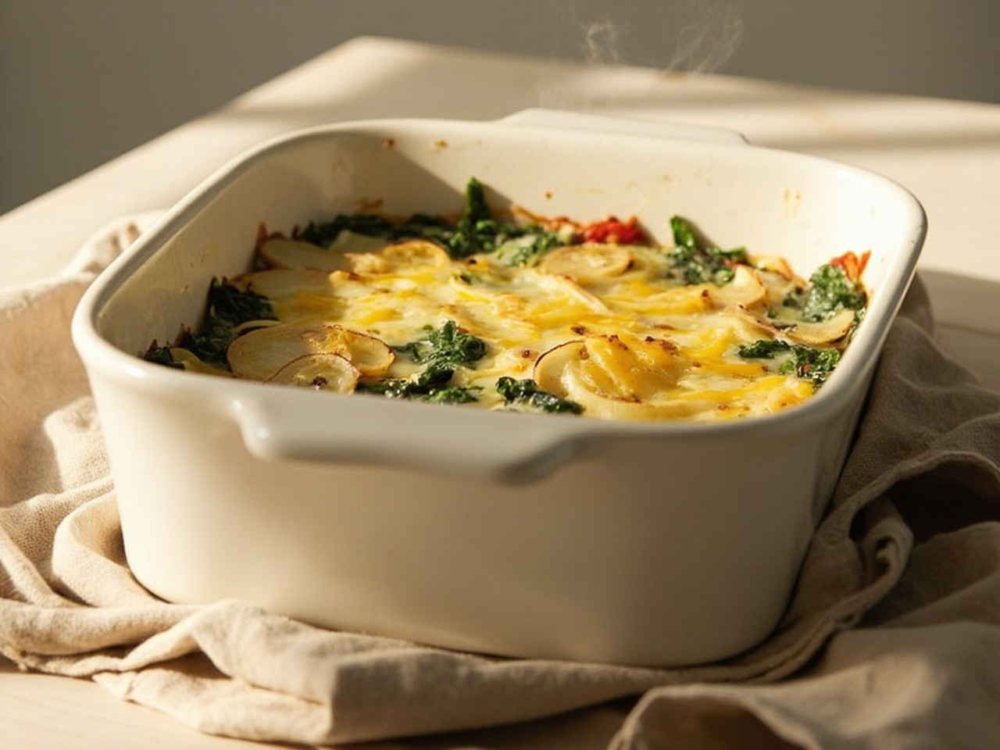
Baked Spinach
Easily stored 🥡
Freezable ❄️
Reheatable 🔥
Built in quiet layers. Creamy in the center, a little gold on top.
Shopping list
Check off what you already have. Amounts are for 3–4 servings.
Produce
Sauces & seasonings
Step 1
Wash everything. Peel and slice 400g potatoes into thin rounds, and leave them in cool water so they don't brown. Cut one red pepper into strips. Slice 150g mushrooms and 100g pumpkin. Cut 500g spinach into short pieces.
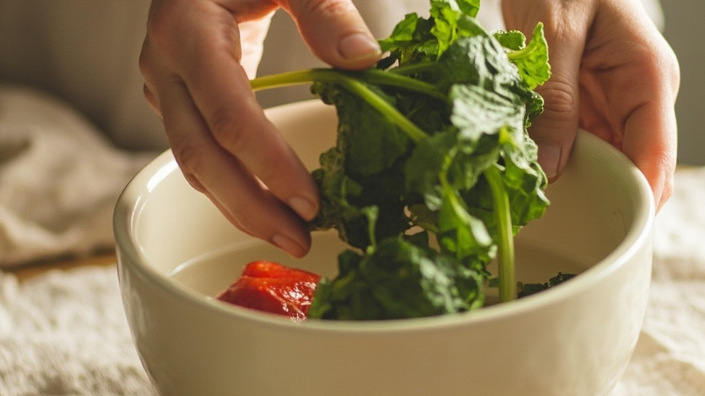
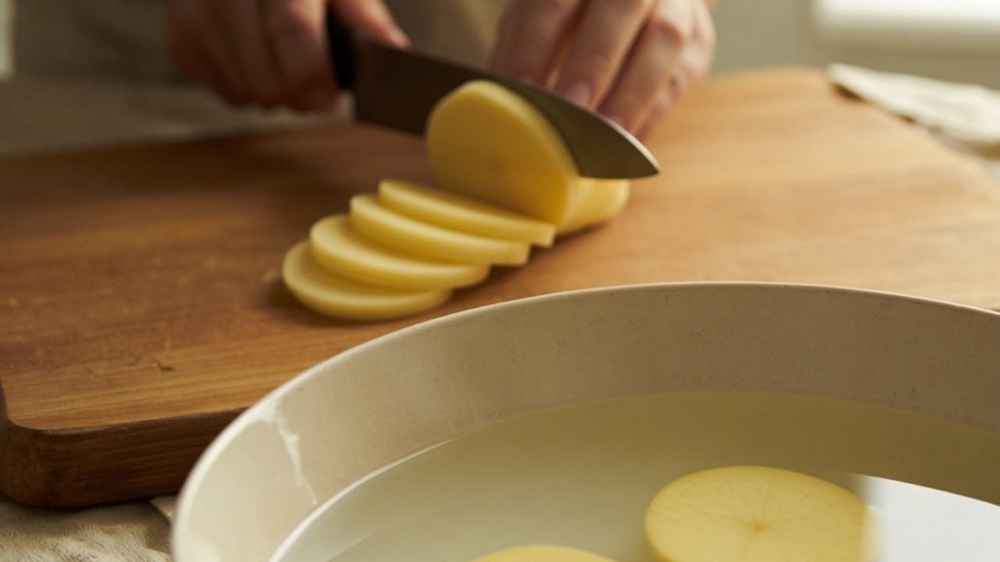
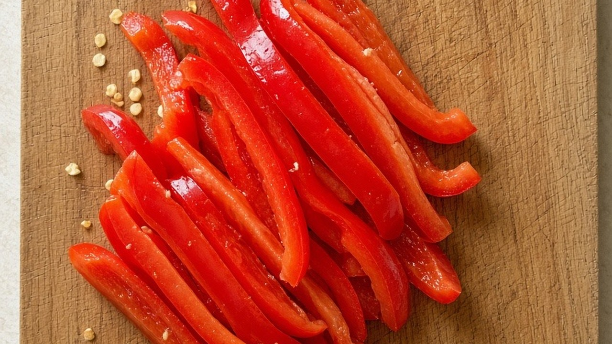
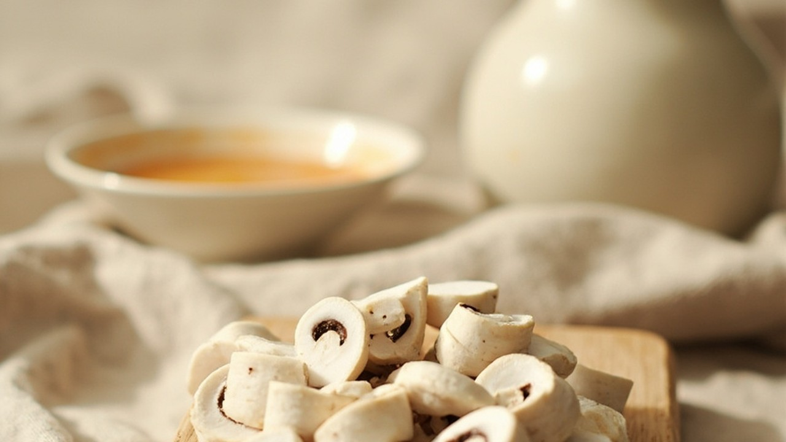
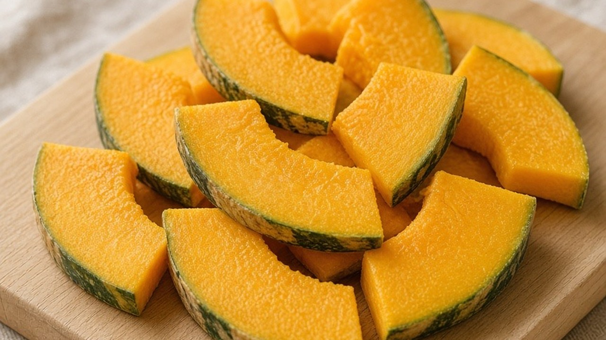
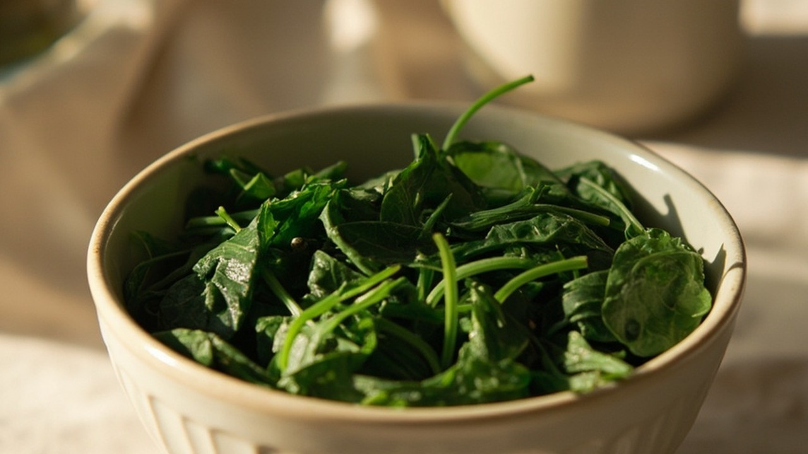
🥬500gSpinach
🥔400gPotatoes
🌶️1Red pepper
🍄150gButton mushrooms
🎃100gPumpkin
Step 2
Warm 20g oil in the pan. Add the mushrooms and let them give up their water. A tiny 1g of salt helps that along. Then the pumpkin, stirred until the edges go soft.
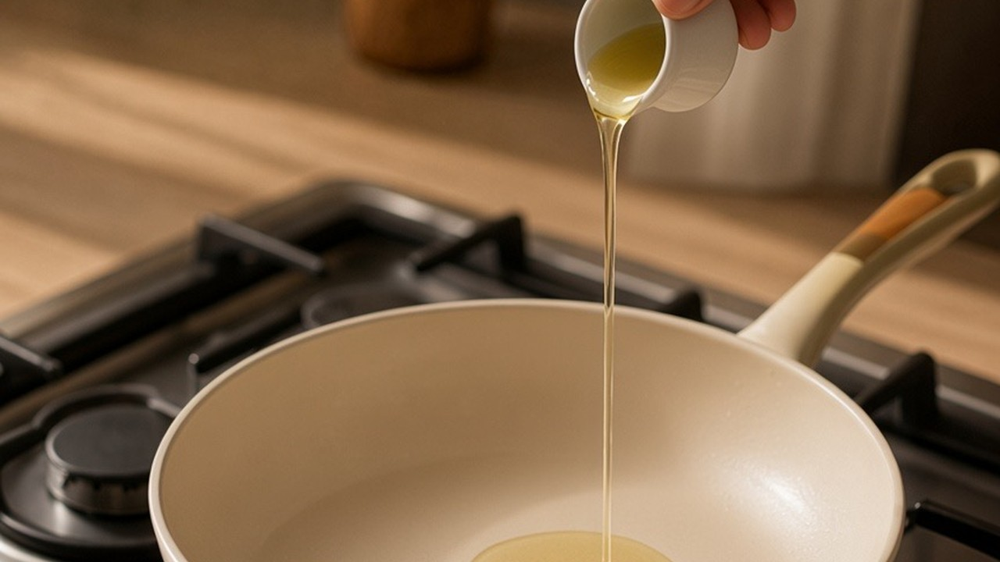
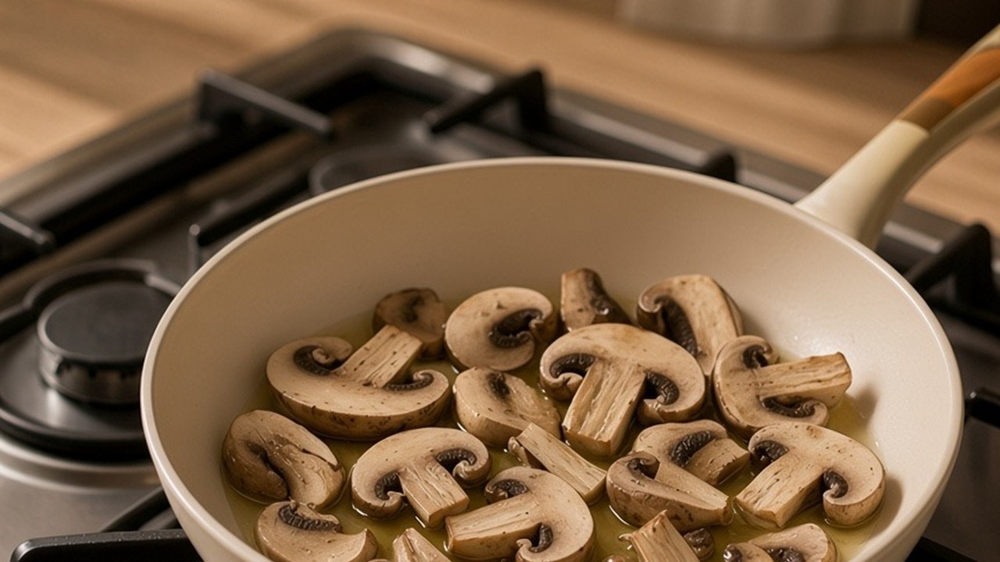
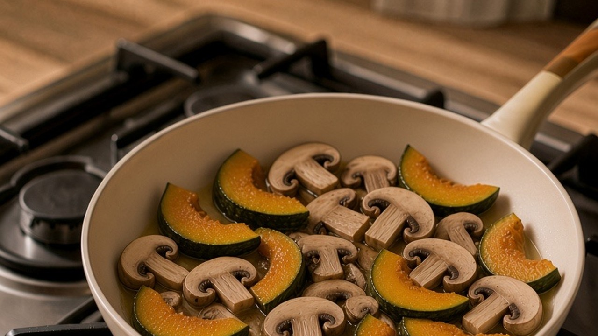
🟡20gOil
🍄150gButton mushrooms
⚪1gSalt
🎃100gPumpkin
Step 3
Add the red pepper strips. Stir through 30g flour, then pour in 200g oat milk and cook until it thickens. Black pepper and a little smoked paprika, just to taste.
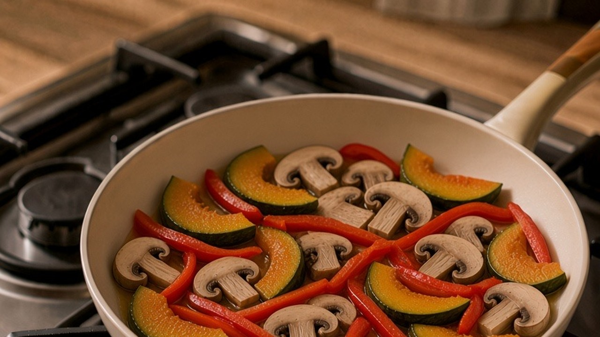
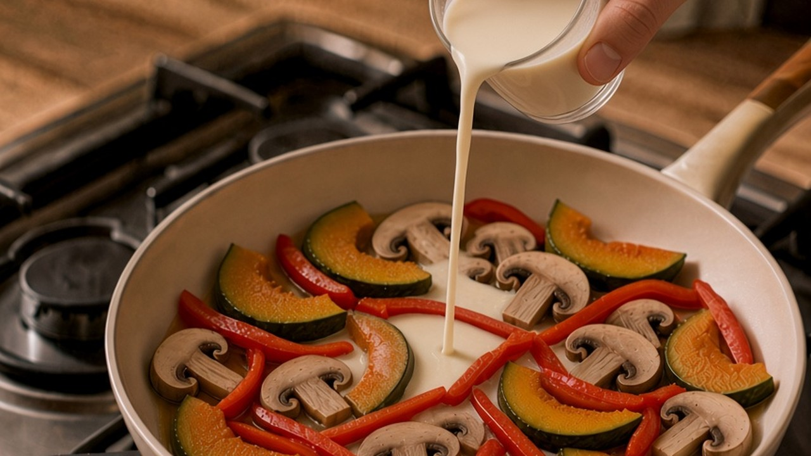
🌶️1Red pepper
🌾30gFlour
🥛200gOat milk
⚫Black pepper, to taste
🟠Smoked paprika, to taste
Step 4
Fold in the spinach. Add the remaining 5g salt — with the 1g from the mushrooms, that is 6g in all. Low heat, then turn it off.
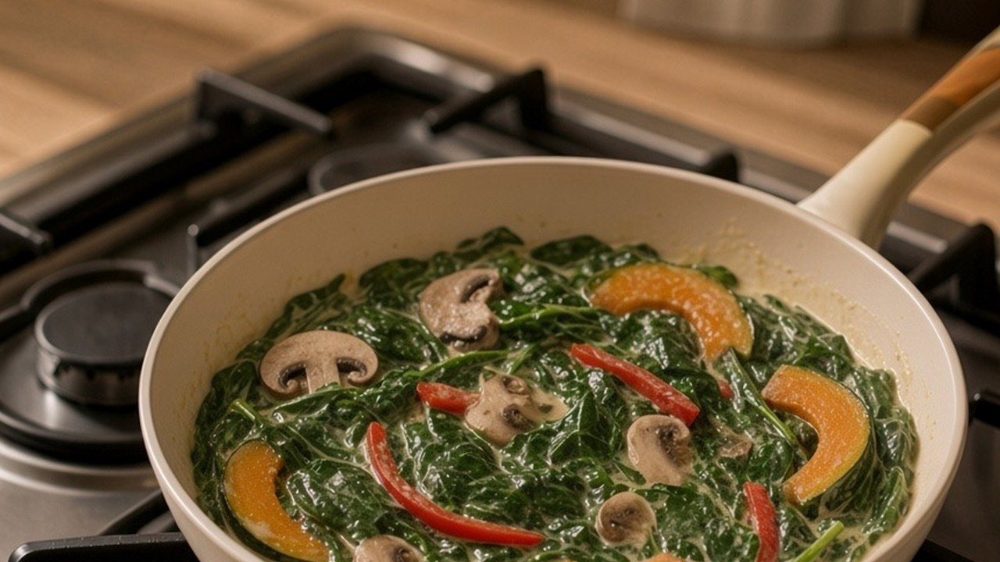
🥬500gSpinach
⚪5gSalt
Step 5
Heat the oven to 230°C. In a baking dish: a layer of potato, half the vegetables, potato again, then the rest. Vegan cheese on top, as much as you like. Bake 18 minutes. Set it down and let the heat settle before you share it.
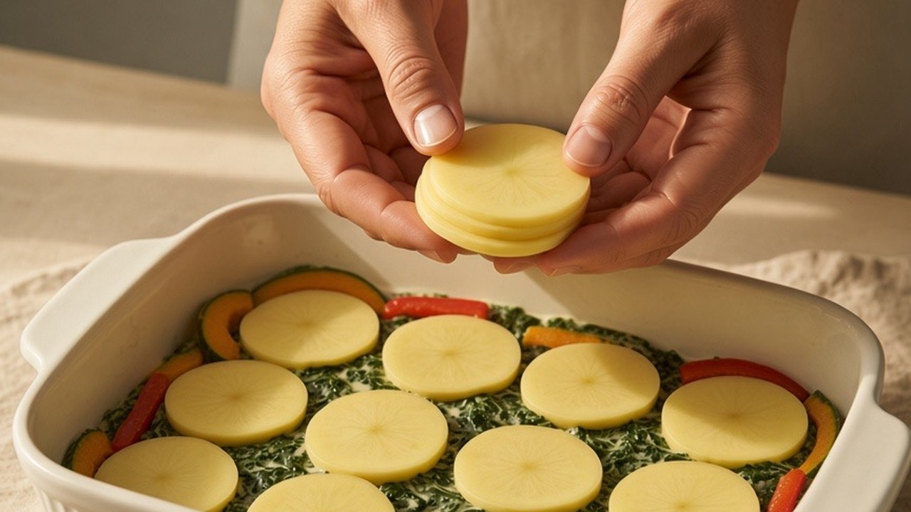
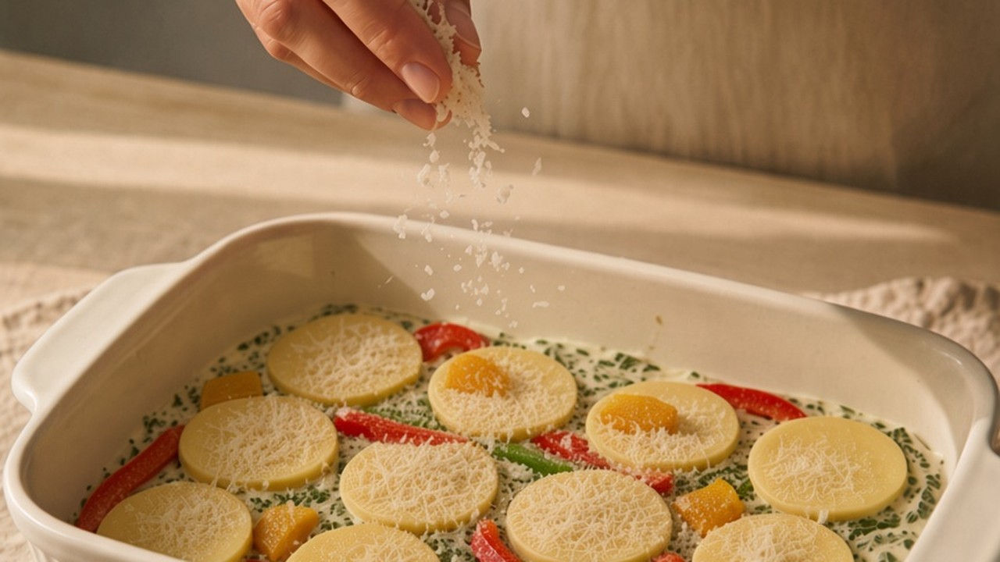
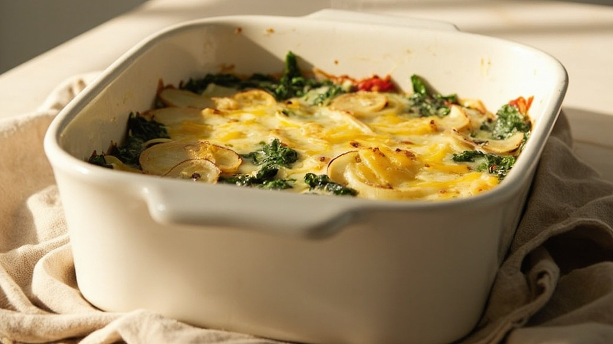
🥔400gPotatoes
🧀Vegan cheese, to taste
🔥230°C18 minutes
Black pepper, smoked paprika, and vegan cheese are to taste. The rest of the amounts stay as written.
Let the dish rest a few minutes after the oven. The layers settle, and it is easier to serve.
How to store it
Cool completely. Keep in an airtight container in the fridge for up to 3 days.
How to freeze it
Freeze for up to 1 month. Potato and vegan cheese will be a little softer after thawing.
How to reheat it
From the fridge, bake or warm in a pan until hot through. Add a splash of oat milk if it looks dry. From the freezer, thaw in the fridge first, then reheat the same way.
Nutritional information per serving (based on 4 servings). Approximate, without vegan cheese.
Calories220 kcal
Protein8 g
| Fat | 6g |
| Saturated fat | 1g |
| Carbohydrates | 34g |
| Sugars | 4g |
| Dietary fibre | 6g |
| Sodium | 600mg |